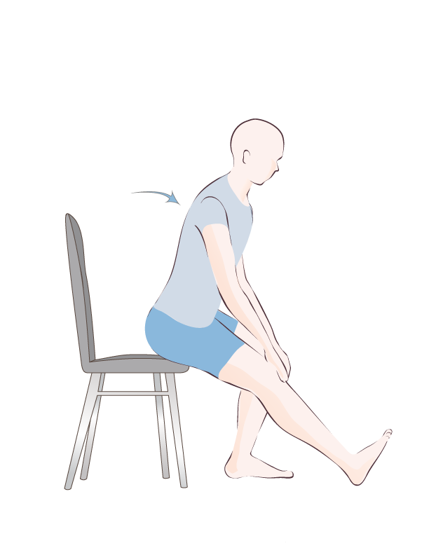

Fitness y ejercicio
¿Por qué es importante adaptar las rutinas a diferentes niveles?
Las rutinas de entrenamiento se pueden adaptar a diferentes niveles, desde principiantes hasta avanzados, con el objetivo de mejorar la fuerza, resistencia y flexibilidad. Estas rutinas pueden incluir ejercicios de fuerza, resistencia cardiovascular y ejercicios de flexibilidad, y se pueden dividir por grupos musculares o por tipos de ejercicios (empuje/tirón, tren superior/inferior).
Rutinas de entrenamiento por niveles
Principiantes
Frecuencia
2-3 días por semana, enfocándose en la adaptación al ejercicio y construcción de una base sólida.
Ejemplos
Rutinas full body, ejercicios con peso corporal como sentadillas, flexiones, zancadas, planchas.
Énfasis
Aprender la técnica correcta de los ejercicios, aumentar gradualmente la intensidad y duración del entrenamiento.
Intermedio
Frecuencia
3-4 días por semana, incorporando ejercicios más complejos y aumentando el volumen de entrenamiento.
Ejemplos
Rutinas divididas (upper/lower body o push/pull), ejercicios con peso libre (mancuernas, barras), y ejercicios de aislamiento muscular.
Énfasis
Mejorar la fuerza, resistencia muscular y empezar a enfocarse en la hipertrofia (aumento de masa muscular).
Avanzado
Frecuencia
4-6 días por semana, con entrenamientos más intensos y voluminosos.
Ejemplos
Rutinas divididas por grupos musculares (Weider), ejercicios con mayor peso y series, entrenamiento de alta intensidad, y periodización del entrenamiento.
Énfasis
Maximizar la fuerza, hipertrofia, potencia muscular y rendimiento deportivo.
Consideraciones importantes
Calentamiento: Preparar el cuerpo para el entrenamiento con ejercicios de movilidad articular y activación muscular.

Enfriamiento: Estirar los músculos trabajados para ayudar en la recuperación y reducir el riesgo de lesiones.
Progresión: Aumentar gradualmente la intensidad, volumen o dificultad de los ejercicios a medida que el cuerpo se adapta.

Nutrición: Asegurar una dieta equilibrada que proporcione los nutrientes necesarios para el entrenamiento y la recuperación.

Descanso: Permitir que los músculos se recuperen adecuadamente entre sesiones de entrenamiento.

Escuchar al cuerpo: Prestar atención a las señales de fatiga y dolor para evitar lesiones.